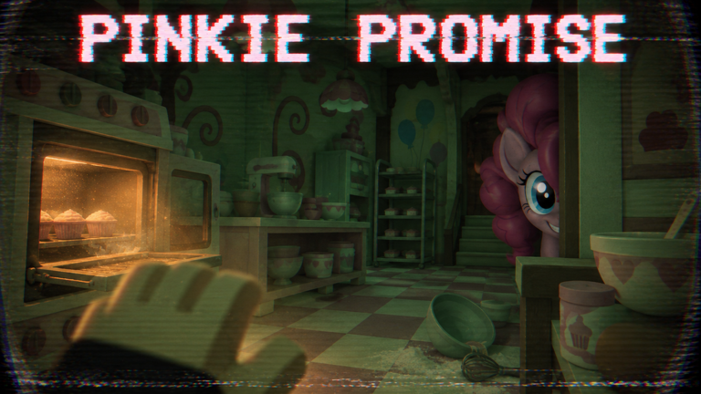

🎀 PINKIE PROMISE [HORROR]: un joc nou cu Pinkie Pie, în topul jocurilor noi, la 25,8K jucători după RoTerminal

🎀 PINKIE PROMISE [HORROR] a apărut în topul jocurilor noi care cresc acum pe Roblox, după contul @roterminal_co. Pe X, pe 25 oct (22:51, ora României), RoTerminal a scris: „The new Roblox games taking off right now, led by PINKIE PROMISE with 25.8K players at 9 days old.” Adică: „Jocurile noi care o iau în sus acum, în frunte cu PINKIE PROMISE, cu 25,8K de jucători la 9 zile de la lansare.”
✅ Ce arată API-ul public Roblox (27 oct, ~00:49 RO):
- 👥 15.773 de jucători online acum, la ora asta târzie în România (cifra de 25,8K e de la postarea RoTerminal, deci nu sunt comparabile direct)
- 👁️ 3.953.202 de vizite
- 👍 22.860 de like-uri și 1.349 de dislike-uri (aprox. 94% like-uri)
- 🏢 Publicat de grupul Party Cannon Studios
- 🛠️ Ultima actualizare: 26 oct, la 18:09 (ora României)
📖 Din descrierea jocului: „Pinkie Pie is throwing you a party 🎉 Just don't break the promise.” E o poveste horror pe capitole cu Pinkie Pie. Capitolul 1 e deja în joc, iar autorii cer să dai Favorite ca să afli de capitolele următoare. Descrierea mai spune că jocul e „inspirat din My Little Pony” și că e în dezvoltare activă, cu mici bug-uri.
⚠️ Cifra de 25,8K și „9 zile” sunt afirmația RoTerminal și n-o putem verifica. Noi nu avem istoricul jucătorilor. În API, jocul apare creat pe 6 oct, nu acum 9 zile. Nu știm când a devenit public.
❓ Ce NU știm:
- Când vine capitolul 2 (descrierea nu dă dată)
- Care a fost vârful real de jucători și când
- Ce înseamnă „9 zile” la RoTerminal: lansare publică sau altă dată
🔗 Postarea RoTerminal: https://x.com/roterminal_co/status/2114459798078943442
🎮 Jocul pe Roblox: https://www.roblox.com/games/75815532269840
Follow pe TikTok @vexu_online și abonare pe YouTube la VEXU Online. Follow = Au ce bile! 💥
⚠️ ZVON
- Cifra de 25,8K jucători și „9 zile” vin din postarea unui cont de tracking (RoTerminal) și nu sunt verificate de noi; API-ul Roblox arată doar jucătorii de acum.